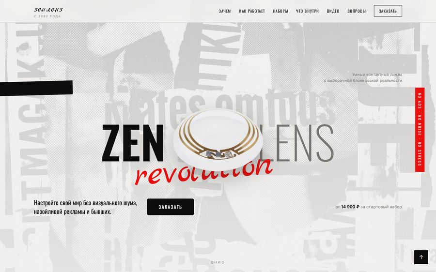
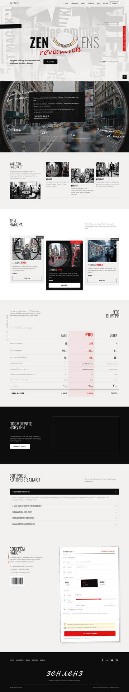
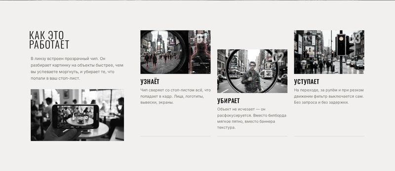
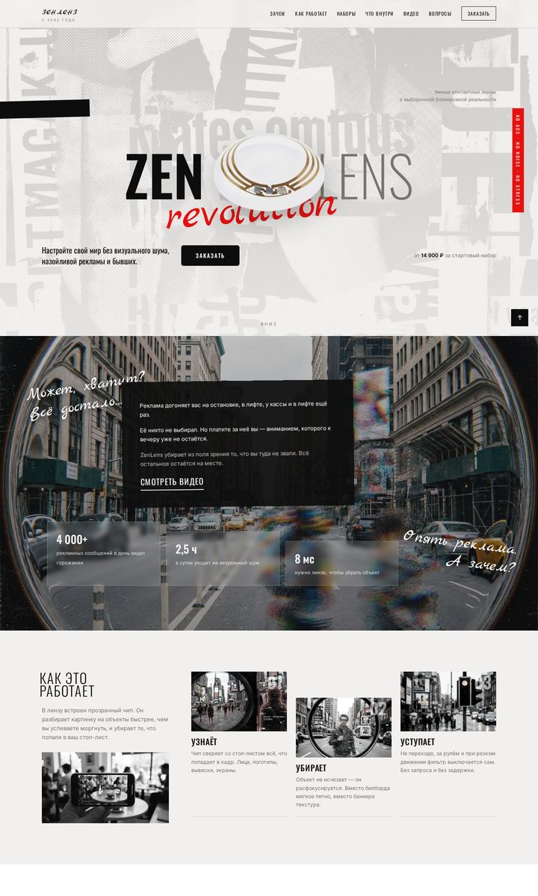
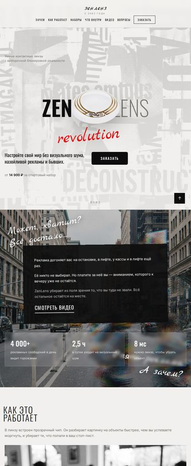
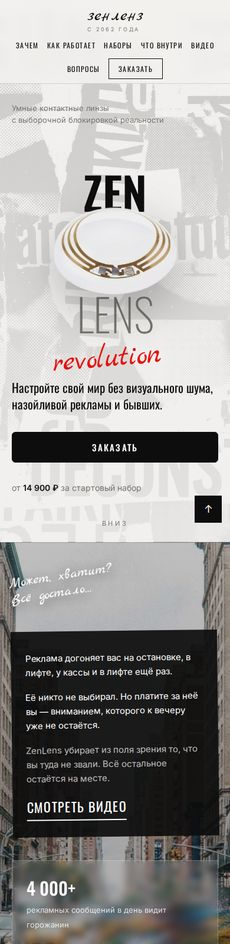
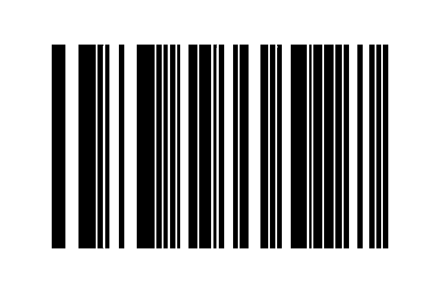

Основы веб-разработки и вёрстки · итоговый проект
ZenLens
 revolution
revolution
Лендинг умных
контактных линз
Основы веб-разработки и вёрстки · итоговый проект
revolution
Лендинг умных
контактных линз
Фамилия Имя, группа
Университет ИТМО · 2026
Задача
брифСверстать лендинг продукта или услуги. Восемь обязательных блоков, все — своими руками.
Плюс требования к самой вёрстке — их я держал в голове на каждом блоке.
Готовый шаблон брать не стал: придумал продукт и весь визуальный язык под него.
Продукт
идеяZenLens — умные контактные линзы 2062 года. Чип в линзе распознаёт объекты и расфокусирует то, что человек внёс в свой стоп-лист: рекламу, вывески, экраны, отдельные лица.

первый экранТему выбрал так, чтобы было что показать во всех обязательных блоках: линейка наборов даёт карточки и таблицу, спорная технология — вопросы и ответы.
Визуальный язык
стиль#f1f0ee
фон
#0d0d0d
текст
#e8100f
акцент
#77756f
второй план
Три цвета и один акцент. Красный работает только там, где нужно действие или важная цифра, — поэтому его замечают.
За основу взял брутализм и вёрстку Дэвида Карсона: рваная сетка, наложения, рукописные реплики поверх фотографий. Фотографии — чёрно-белые, цвет возвращается только при наведении.
Структура
карта страницыПорядок собран по логике: сначала проблема, потом объяснение, и только после этого цена и форма.

страница целиком
Вёрстка
flexboxНи одного float и ни одной таблицы для раскладки. Ряды карточек, шапка, двухколоночные блоки и бланк заявки — всё на flex-контейнерах.
.cards { display: flex; flex-wrap: wrap; align-items: flex-start; gap: 28px; } /* карточки стоят на разной высоте */ .card { flex: 1 1 300px; } .card-dark { flex: 1.15 1 320px; margin-top: 54px; } .card-up { margin-top: 24px; }

шаг 02 опущен внизРовный ряд читается как таблица, поэтому карточки и шаги я намеренно сдвинул по вертикали — глаз идёт по диагонали, а не по линейке. Сдвиг задаётся обычным margin, при сужении экрана он обнуляется.
Позиционирование
position.header { position: fixed; top: 0; left: 0; backdrop-filter: blur(10px); } .tech-side { position: sticky; top: calc(var(--head) + 32px); } .hero-lens { position: absolute; left: 50%; top: 50%; transform: translate(-50%, -50%); }
Вертикальные подписи на полях — тоже absolute, развёрнутый на 90 градусов.
Движение
Все длительности в диапазоне 0,25–0,6 секунды: заметно, но не мешает читать.
.card { transition: transform .4s, box-shadow .4s; } .card:hover { transform: translateY(-10px); box-shadow: 14px 14px 0 rgba(13,13,13,.1); } .card-photo img { filter: grayscale(.4); } .card:hover .card-photo img { filter: none; transform: scale(1.07) rotate(.6deg); }
Адаптивность
1240 · 1100 · 900 · 640
1440

820

390
Итог

Что забрал из работы: научился держать сложную сетку на одном flex, не ломая её на телефоне, и понял, что ломать правила вёрстки стоит осознанно — иначе это просто ошибки.
спасибо